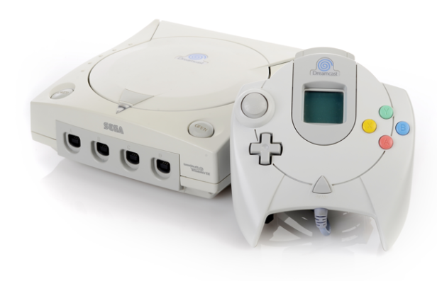
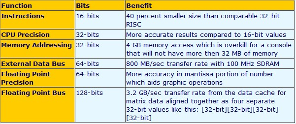
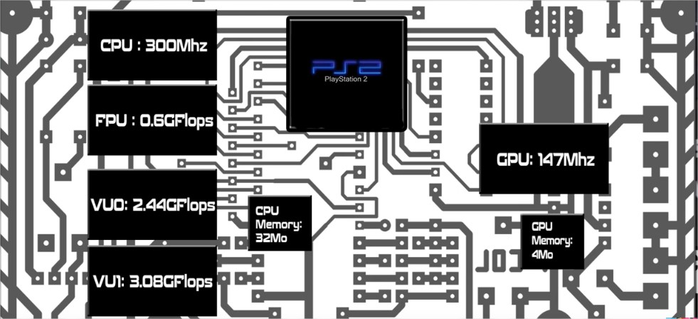
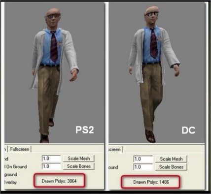
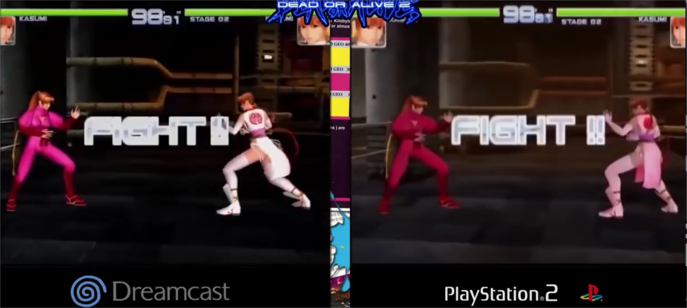
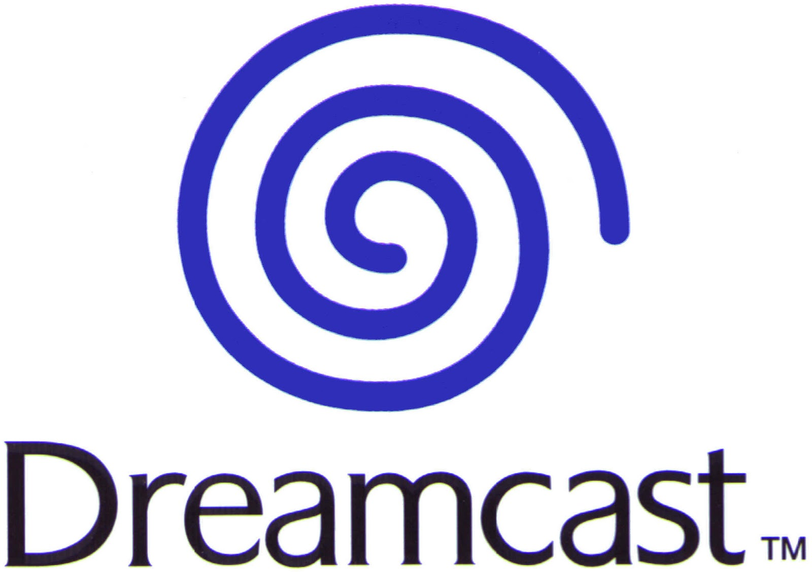

| Accueil | Informatique | Projets | Mon Parcours |
Dans le cadre du cours B-12, nous avons réalisé un travail ayant pour sujet le matériel informatique. Pour ma part, j'ai choisi de présenter la DreamCast, la dernière console de Sega, car son histoire est singulière out comme son Hardware. Vous pouvez accèder au PDF en cliquant ici.
C’est en 1999 que la DreamCast voit le jour, la dernière console produite par Sega. Son développement a couté entre 50 et 80 millions de dollars, et s’est vendu à hauteur de 10,6 millions d’exemplaires dans le monde. C’est une console qui a eu une durée de vie très courte et qui a marqué la fin de la production de Sega dans le monde du Hardware et de la console de jeu vidéo vers le début des années 2000, laissant place à ses concurrents : Microsoft, Nintendo et Sony. Cependant, malgré cet échec, la DreamCast est considérée comme une très bonne console, voir la meilleur de son temps.
Le CPU utilisé par la Dreamcast est le Hitachi SH-4. Ce processeur a été développé en collaboration avec Sega et l’entreprise Hitachi. Sega a choisi ce CPU pour plusieurs raisons. Tout d’abord, ce CPU est condensé à 200MHz, et a de très bonne performance pour son prix, puisqu’il est capable de générer 360 MIPS (Millions Instructions per second) et 1,4 Gigaflops (billion floating-point operations per second) pour environ 30$. De plus, le SH-4 n’a pas besoin de système de refroidissement, ce qui permet de réduire les couts de fabrications, de simplifier le design du système et réduire son poids et sa taille. Le fait que la Dreamcast ne possède qu’un CPU facilite grandement le travail des programmeurs de chez SEGA, qui n’ont pas à programmer sur différents processeurs comme sur la Playstation2.
Si l’on compare le CPU SH4 avec le Pentium 2 de Intel (450MHz), le SH4 est capable de calculer 3 fois plus de points flottants par seconde. De plus, par rapport au Intel Katmai (500 MHz) ou au AMD K7 (500 MHz). Mais l’adversaire de la Dreamcast étant la fameuse Playstation 2, il est plus pertinent de comparer la Dreamcast avec cette dernière. Ainsi, le schéma ci-dessous résume les grandes caractéristiques de la Playstation 2 :  A première vue, la Playstation 2 dispose d’un meilleur hardware : le CPU dispose d’une meilleur cadence (300MHz vs 200MHz). Sa mémoire est aussi plus performante (32Mo vs 16Mo) et il en va de même pour ses processeurs. Cependant, l’architecture de la Playstation 2 serait moins optimisé que la Dreamcast, est c’est qui aurait des conséquences positives en faveur de la console de SEGA. En effet, les multiples processeurs de la playstation 2 rend les jeux plus difficiles à programmer et à optimiser, et on peut observer des impacts sur les graphismes. Ainsi, pour un même jeu, la Dreamcast afficher souvent de meilleures performances, malgré l’avantage du hardware de la playstation2. Par exemple, un personnage de Half Life demandera à la playstation2 3864 polygones à générer contre 1465 pour la Dreamcast.  Un autre exemple encore, avec l’anti aliasing de la Dreamcast qui semble être plus performant que celui de la Ps2. En effet, en comparant le jeu Dead or Alive 2 sur ces deux consoles, le jeu apparait moins terne et flou sur la console de Sega que sur la console de Sony.
A la sortie de la PlayStation 2, la ludothèque n'était pas immense. En réalité, de nombreuses personnes attendaient des exclusivités comme MGS2 ou Sillent Hill 2. La PlayStation 2 était plus difficile à programmer que la Dreamcast, énormément de jeux Playstation 2 n'ont pas le niveau graphique d'une console de cette génération. Cela a d'ailleurs toujours été un reproche fait à Sony et il a fallu attendre la Playstation 4 pour qu'ils décident de se pencher sur ce point (le processeur de la Playstation 3 était le CELL, merveille technologique mais trop exclusif pour être correctement utilisé sur des jeux multiplateformes). La DreamCast possède 8mo de VRAM quand la PlayStation 2 en à 4. Qui plus est, la Dreamcast utilise un système de compression de texture issue directement des bornes d'arcades, c'est pourquoi même aujourd'hui les jeux Dreamcast ont encore de belles textures et très peu d'aliasing comparé à la Playstation 2. A l'époque, les joueurs ne se désintéressaient pas du mode online pour privilégier la 3D, mais les services en ligne ont mis beaucoup de temps à arriver. En effet le premier jeu réellement exploitable en ligne était ChuChu Rocket, offert gratuitement par Sega mais disponible plusieurs mois après la sortie officielle de la console. Pareille pour Quake 3 Arena qui ne fut disponible que vers les 3/4 de la vie de la console. L'accès à internet était également très cher vu que la technologie ADSL à cette époque n'existait pas. Il fallait donc payer chaque minute de connexion. Là où Sega pensait donner du jeu aux « Hardcore gamers », Sony a probablement gagné la guerre des consoles en privilégiant le grand public en ajoutant un lecteur DVD. Il faut bien comprendre que les premiers lecteurs DVD coûtaient presque 2000 francs et que peu de personnes encore en possédaient. Sony a ainsi fait le pari d'offrir un support multimédia aux parents et une console aux enfants, alors que Sega ne proposait que son GDROM. Toute la campagne de promotion à quasiment tourné autour de 2 points : Internet et Shenmue. Le premier est arrivé très en retard, mal implanté et au final peu utile. Shenmue a été pire : coût de développement énorme et a connu une relative mauvaise campagne promotionnelle (traduction du jeu en anglais uniquement).
